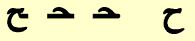
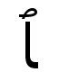

Interpreting for Arabic: Language classes, religious school,
religious services, Qur'an study, and sermons.1

Introduction
Occasionally an interpreter is confronted with a text that includes words from a foreign language, be it a scholarly quote in Latin or Greek or a clever saying in Spanish or French. At this point we usually trust the speaker to translate it into English momentarily, and while we're waiting we merely sign NOW SPEAK FOREIGN LANGUAGE, or if we recognize the language we would say which one it was. What happens when the consumer wants you to represent the foreign language itself? I hope to make some suggestions that would be helpful to an ASL interpreter for such a setting, using my experience interpreting for such settings.
Preparation
The task is difficult enough without having a previous knowledge of the language being taught. Interpreters for foreign language classes really should have had at least two years of instruction in the foreign language they will interpret, even for an introductory course in that language. This would be also true for the other settings where we may be called upon to represent Arabic, such as for a consumer who is knowledgeable or wishes to become knowledgeable in Arabic when Arabic terms are occasionally mentioned. We will mainly focus on Arabic language courses, but with a little reworking, this would fit in other settings, too. As a last resort, interpreters with no knowledge of the language can start by interpreting Arabic 1 and working their way up. I must admit this is what I did. This was made easier for me because we focused on talking about the letters and how to pronounce them and did not do much work with vocabulary or full sentences. Increasing numbers of interpreters have a third language, besides ASL and English, and I believe that a third language, whether it's a spoken language or a signed language, is very helpful for further breaking away from the unavoidable ethnocentrism that monolinguals may have.
Having the textbook for the class is essential. By following the syllabus and reading ahead, the interpreter can know which aspects of the language and which vocabulary items will be dealt with in class on any given day. Remember to bring the book to class because it will help you let the D/deaf students know where the class is in the book. The teacher may ask a question from the book without mentioning the number of the question, and by checking your copy of the book you can tell them where to read, instead of laboriously fingerspelling the question when they could get it faster by reading it in the text. If the students are reading an extended passage from the book, you might as well tell the D/deaf students where the class is in the textbook and have them read along. It may be difficult for you to understand some hearing students when they read Arabic or speak it. We know that it takes more effort to interpret a speaker with a heavy accent or a foreign Deaf person who may have remnants of his/her foreign sign language mixed into their ASL. All the more so when we hear mispronounced Arabic, which is at best a second language for most of us. Having the book turned to the right page may help you use cloze to figure out which Arabic words they are trying to pronounce.
Doing the homework is also very helpful, especially if the language is new to the interpreter or has been unused for several years. If the interpreter does not wish to purchase the textbook and cannot get a copy from the teacher, the language department, or the library, it is possible to order a desk copy2 by writing to the publisher. If that doesn't work, xerox the pages you need, use an old Arabic text, or borrow the teacher's text at a regular time when you are free and the teacher is busy with other things. Consider tutoring or working together with the student if you are reasonably competent in the language. If you are just learning Arabic with the class you can still use the time to figure out together how Arabic works and what the student thinks would work best for her/himself in terms of representing the language.
3 Orthographic and phonological challenges
Fingerspelling every word would definitely represent a foreign language exactly, if it doesn't have a different alphabet, but it is just too much for most D/deaf people's eyes and the interpreter's hands. In addition, Arabic has ten phonemes (letter sounds) that do not exist in English, so ASL fingerspelling falls a bit short of representing Arabic words. Arabic does have a fingerspelling system that has become relatively standardized among the Deaf of different Arabic-speaking countries, although their Sign Languages differ greatly. I have seen it referred to in the literature as ArSL or Arabic Sign Language, but this is a misnomer, since it is the fingerspelling system that is fairly standardized, not the Sign Language. I will refer to it as Arabic fingerspelling or ArFS. Using ArFS is helpful when the teacher is taking about specific letters and diacrits (markings to help with pronunciation).
Every language has a slightly different phonology or way to pronounce its letters. The interpreter needs to find out what the student wants from the course. Does s/he want to learn how to pronounce, speechread, or only read and write the language? This is a good discussion to have with the teacher present, so that the teacher can become aware of what modifications might need to be made. This will bring up the broader questions of how the D/deaf student should recite.
Once the student learns the names of the letters and how to pronounce them, the actual handshapes can be set aside and the Arabic words can be represented using one of the following options: (1) ASL fingerspelling, (2) ArFS, (3) ASL signs, (4) a specific Sign Language of an Arabic speaking country (such as Kuwaiti Sign Language or Egyptian Sign Language, for which there are some resources), or (5) Cued Speech. Occasionally the teacher may return to focusing on specific letters to make special points about grammar or to correct someone's pronunciation. You will therefore still need to have a strategy for representing Arabic letters.
(1) ASL fingerspelling: Suggestions will be given for how to spell Arabic sounds as each of the letters and special symbols are discussed. Whichever way you decide to represent the letters, you should spell their names in addition for a while so that the student will make a connection between your representation and how it is transliterated4 in the textbook. For example the book might say, "An alif may function as a long vowel." The student must recognize which letter is meant when it is spelled in English (transliteration).
(2) ArFS: In the next section, you will find a lengthy discussion of how to pronounce the various letters and diacrits, and above it you will find the ArFS representation for each of these.
(3) ASL signs: In more advanced classes, when the pace picks up, it may be necessary to sign in ASL those words that have already been learned while mouthing the Arabic. We interpreters should be well aware that there is no one-to-one correspondence between any two languages, so it should come as no surprise that we will be signing something that is not literally what we are mouthing. For example, "SabaaH il-kheer (Good morning)" and "SabaaH in-nuur (response to 'Good morning.')" This exchange literally mean "Morning of the goodness" and the reply, "Morning of the light." This would be signed "GOOD MORNING" both times, but the exact Arabic would be mouthed.
(4) A specific Sign Language from an Arabic-speaking country5: This will only work if the student(s) and interpreter are willing to put the time and effort into learning another Sign Language, but this can be a marvelous technique. I have used the same sort of technique in interpreting three German classes with two different students, but we were indeed motivated to learn Deutsche Gebärdensprache (German Sign Language) as well as spoken German.
(5) Cued Speech: could come in very handy for representing a foreign language, since it represents the pronunciation (and the individual words) in a way that the eye can take in, rather than fingerspelling every word. However, it requires too much skill and experience for any one to learn this while trying to learn a foreign language, so the interpreter and student would have to already know Cued Speech. As mentioned above, phonologies differ, so special cueing systems have been developed to represent phonemes that do not exist in English. R. Orin Cornett, who invented Cued Speech reports6 that Arabic does have its own cueing system and that audiotape training is available. although I have not found information on how to purchase it. Below is a chart of Cued Speech for Arabic.

Arabic letters (click on letter to jump to that entry)
Arabic diacrits and special letters
We begin with the first letter of the Arabic alifbaa: alif. The ArFS is shown above. This format will continue for all the letters and diacrits. Below it is the name of the letter. There is sometimes more than one name and more than one way to transliterate the Arabic name. Below this is how the letter is printed. For the alif only two forms are shown, but in general there will be four forms shown. They are from right to left (the direction in which the language is written): isolated (no letter that would join or connect to it is on its right or left side), initial (this is the first letter in a word or the letter before it is not a joiner), medial (letters on both sides are joiners), and final (it is the last letter in the word, or the letter after it is a non-joiner.)
Pronunciation8: When there are no added vowels above or below it, the alif acts as a long vowel and is pronounced like the a in bad or the e in bet when the consonant before it is frontal. It is pronounced like the a in father or the u in but. if the consonant before it is deep. Let's explain this terminology. As a parallel, say "happy" and then "haughty." Try to feel how the vowel sound from the a in the first word comes from the front of the mouth. Contrast this with the au from the second word. This sounds is much deeper and comes from deep in the throat. There are, of course, regional differences, since the Arab world is extensive geographically.
In Arabic, long vowels are long in duration and not in name only. They last about twice as long as a typical consonant. They are transliterated as a double letter. For example, baab means "gate". The word is composed of only three Arabic letters: baa, alif, baa, but the vowel is held for an extra beat, shown as aa. When there is an added vowel above or below, the alif becomes an alif-hamsa, which has no pronunciation of its own, but is only a place holder for the short vowel that accompanies it and makes the vowel even shorter. We will discuss vowels after the letter thaa.
Mnemonic (Arabic): I will include a memory aid to help you remember each letter and one to help you remember the ArFS. The alif looks like the numeral one ("1") and it is the first letter in the alif-baa. To remember that the letter can join to the letter before but not after (remember we are writing from right to left), imagine an alif (olive) tree. Imagine you are looking at your elbow as you sign TREE. If you are right-handed, the arm looks like an L and is joined to nothing on its left. Use these mnemonics if they are helpful to you, or use them as a springboard to come up with your own.
Mnemonic (ArFS): The alif looks like an ASL "A", also the first letter and the thumb waves back and forth like an olive (alif) tree in the wind.
Pronunciation: Like the English letter b. Vowels that follow it have a frontal9 quality. Many of the letter names end in aa. This ending is spelled alif and then hamza. See the entry for alif to see the pronunciation for a frontal or deep9 one. The next letter is a short burst like the e in bet.
Mnemonic (Arabic): Look at the shape of the letter (the isolated form on the extreme right) and imagine a smiling lamb with a bell at its neck pronouncing its name, "baa!" It is a joiner on both sides because of the smile and wants to connect to everyone.
Mnemonic (ArFS): Look ahead and see that this and the next two letters are formed by the same "smile" or downward arc. Also notice that the ArFS all have the same palm orientation and fingertip orientation. The baa has one finger up, the taa has two fingers up (fingers together) and the thaa has three fingers up (also together), the number of dots in each Arabic letter.
Pronunciation: Like the t in teeth, which is frontal8.
Mnemonic (Arabic): Imagine saying "Ta-da!", which starts with a t, and then a smiley face which includes the two eyes above the mouth. It is a joiner on both sides because of the smile and wants to connect to everyone.
Mnemonic (ArFS): Just as baa, taa, and thaa share the same downward arc, the ArFS had the same palm orientation and fingertip orientation. The baa has one finger up, the taa has two fingers up (fingers together), and the thaa has three fingers up (also together), the number of dots in each Arabic letter.
Pronunciation: Like the th in three, not the th in that. Notice that air is pushed out with the first word, but not with the second.
Mnemonic (Arabic): The letter is pronounced like the th in three, and it also has three dots above. It is a joiner on both sides because of the smile and wants to connect to everyone.
Mnemonic (ArFS): Just as baa, taa, and thaa share the same downward arc, the ArFS had the same palm orientation (PO) and fingertip orientation (FO). The baa has one finger up, the taa has two fingers up (fingers together), and the thaa has three fingers up, the number of dots in each Arabic letter.
Pronunciation: Now that you have learned three consonants (baa, taa, and thaa), we will begin to learn the vowels. We start with two consonants that can also act as vowels. This should not be such a strange concept to us. Do you remember learning the English vowels? "A, e, i, o, u, and sometimes y." The y in yellow is a consonant, but the y in sky is a vowel. The letter waaw is pronounced w as in well when proceeded or followed by a vowel, or at the beginning of a word. Otherwise it is pronounced like the oo in school. The two sounds are related: If you say oo and ah immediately afterwards, it becomes wah. As a vowel, remember that the oo is twice as long as a normal English vowel.
Mnemonic (Arabic): Imagine the shape of a reclining woman. The men see her and say "Wow (waaw)!" and the woman who are jealous say "Oo!" The letter joins on the right side because her hair flows behind her, but she is reclining so she can't join anyone to the left.
Mnemonic (ArFS): The index finger and the thumb follow the curve of the letter.
Pronunciation: The letter yaa is a consonant at the start of a word or when preceded or followed by a vowel. Otherwise it sounds like the ee in eek and stretched out twice as long as a vowel.
Mnemonic (Arabic): See the letter as Superman with his eyes looking below using x-ray vision with his cape furling to the left. When the men see how strong Superman is, they say, "Yeah!", and the women say "Eek!" The waaw is a joiner on both sides because Superman helps everyone in the world.
Mnemonic (ArFS): The handshape is like the ASL fingerspelling for "Y" and can have a similar sound.
Pronunciation: This and the next two entries are diacrits, not letters. They represent short vowels that are shown as an aid to pronunciation, but generally are not included in everyday Arabic. They would be shown in ancient texts, such as the Qur'an, to help in pronouncing the older forms of Arabic. Note that the name is pronounced "fat-ha", not "fath-ah". The "ha" syllable forces out air as it is uttered. The distinction is shown by using an uppercase (capital) letter, which in this case is in the middle of the word. A frontal8 fatHa sounds like the e in bed and a deep8 one sounds like the u in but. This diacrit is always shown above the letter that it will be added to. Its shape is a diagonal line (sometimes a horizontal one) above its consonant.
Mnemonic (Arabic): Father (fatHa) is upstairs (above the consonant) in bed. I wake him up and he says, "Huh?"
Mnemonic (ArFS): The ArFS uses the non-dominant hand to show the placement of the fatHa above a baa. It is customary in grammar books to also use a written baa as an illustration as seen in the written form above.
Pronunciation: The short vowel Damma is a small waaw placed above the consonant as represented above. It sounds like the oo in wool.
Mnemonic (Arabic): See the mnemonic (Arabic) under waaw.
Mnemonic (ArFS): See the mnemonic (ArFS) under waaw. The ArFS uses the non-dominant hand to show the placement of the Damma above a baa. It is customary in grammar books to also use a written baa as an illustration as seen in the written form above.
Pronunciation: The pronunciation of a kasra ranges from the frontal8 ee in keep to the deep8 i in bit.
Mnemonic (Arabic): Whereas the fatHa has a frontal sound like the e in bed, the kasra is deeper and so is below the letter.
Mnemonic (ArFS): The ArFS uses the non-dominant hand to show the placement of the kasra below a baa. It is customary in grammar books to also use a written baa as an illustration as seen in the written form above.
Pronunciation: The letter jiim has three different pronunciations, depending on the region in the Arab world. In the Arabian Peninsula and surrounding areas it is pronounced like the j in Jack, or the dg in bridge. In the Levant and North Africa, it is pronounced like the j in bon jour. In Egypt it is a hard g like in game.
Mnemonic (Arabic): Imagine someone doing sit-ups in gym (jiim) class with the top of the letter showing the elbows sticking out from the head and the curve showing the person's big belly. (That's why he needs to do sit-ups!) The dot is for perspiration.
Mnemonic (ArFS): The top of the handshape is like the top of the Arabic letter and the thumbtip is positioned where the dot would be in each case. For the jiim - below the top surface of the fingers, for the Haa - hidden next to the fingers, for the khaa, above the surface of the fingers.
Pronunciation: The letter Haa represents a sound that is produced deep in the throat. It has no equivalent in English. First take a few minutes to become better acquainted with some of your throat muscles that you use often, but not to speak English. The following exercises are designed to make you aware of what these muscles can already do, so that you can use them to speak Arabic. Practice them for a few minutes every day, as often as you can.
Exercise 2. Repeat this with your mouth open. Try to breathe out through your mouth -- if you can, you are not closing off the windpipe entirely.
Exercise 3. Constrict those same muscles so that air can just barely squeeze through your throat. Imitate someone fogging a pair of glasses to clean them. By now, you should be aware of what your throat muscles are doing.
Exercise 4. Bend your head down so that your chin rests on the top of your chest, and repeat Exercise 3. This position should make it easier fo you to feel what you are doing.
Mnemonic (Arabic): For jiim we said to "Imagine someone doing sit-ups in gym (jiim) class with the top of the letter showing the elbows sticking out from the head and the curve showing the person's big belly." The dot for perspiration is now missing because the exercise is done and the exerciser breathes out: Haa!
Mnemonic (ArFS): The top of the handshape is like the top of the Arabic letter and the thumbtip is positioned where the dot would be in each case. For the jiim - below the top surface of the fingers, for the Haa - hidden next to the fingers, for the khaa, above the surface of the fingers.
Pronunciation: The sound of the khaa is found in many European languages: the Russian x, the Scottish pronunciation of loch, and German ch as pronounced after a back vowel as in Bach. Some people use this sound to say "yech!" To pronounce it, say k and pay attention to where the back of your tongue hits the back of the roof of your mouth and blocks your windpipe. Instead of closing off the windpipe with the back of your tongue completely, block it part way, and you will produce this sound.
Mnemonic (Arabic): It is time for that person to start his sit ups again and says khaa to mean "yech!" The dot is on the top because s/he is "taking it from the top (starting from the beginning)."
Mnemonic (ArFS): The top of the handshape is like the top of the Arabic letter and the thumbtip is positioned where the dot would be in each case. For the jiim - below the top surface of the fingers, for the Haa - hidden next to the fingers, for the khaa, above the surface of the fingers.
Pronunciation: This symbol is a pronunciation marker that indicates the absence of a short vowel. So far, you have learned to use fatHa, damma, and kasra over consonants to indicate the short vowels, and consonants not followed by a vowel have been left "blank". In fully vowelled texts, however, all consonants have at least one marking, even if no vowel occurs, because there is a special symbol to indicate the absence of a vowel. This symbol is called sukuun (meaning silence).
Mnemonic (Arabic): You can think of this diacrit as a zero, which is represented similiarly in Arabic but the zero looks like a small dot.
Mnemonic (ArFS): You can think of this diacrit as a zero, which is represented similarly in Arabic but zero looks like a small dot. The ArFS uses the non-dominant hand to show the placement of the sukuun above a baa. It is customary in grammar books to also use a written baa as an illustration as seen in the written form above.
Pronunciation: hamza is a not a vowel but rather (like other consonants) is a carrier of vowel sounds. It is a sound you make in English all the time--every time you say a word that begins with a vowel, in fact--but you do not recognize it as a consonant because English has no letter for it. Linguists call it a glottal stop. Say "uh-oh" several times and pay attention to the sound you make in between the two syllables. You make the same sound when you pronounce any word that begins with a vowel, such as our, it, I, on, up. Say these out loud, and pay attention to the "catch" in your throat as you pronounce the first vowel. In Arabic, however, this sound is considered to be a consonant.
Mnemonic (Arabic): Imagine that the shape represents your uvula (that flap that hangs down in the back of your thorat and vibrates when you say "ahh" for the doctor) which also vibrates when you feel that catch in you throat.
Mnemonic (ArFS): The hand vibrates from side to side (it doesn't twist like in the ArFS for alif), and the thumb is held up so that you can similarly envision the uvula moving as mentioned above.
Note: The hamza can appear alone as pictured above, or it can appear over an alif like so: and is represented in ArFS thusly:
Pronunciation: This consonant is pronounced like a clear, front d in English, as in the word dentist (not like the d sound in puddle).
Mnemonic (Arabic): Imagine a doll (and hence the d sound) that is sitting on a bed with its shoes making an edge. This is important becase it does not connect to the next letter.
Mnemonic (ArFS): This is a view of the hand as the receiver sees it, not the signer. Form this handshape and note that if the index finger were extended upwards, like the ASL "L", it would look like the letter. But this hand shape is needed for the laam, which is taller, so the index finger has to be brought down a little to make the daal handshape as we see it above.
Pronunciation: You learned that thaa is pronounced like the th in three. This it the "other" th like the th in other. Remember it that way. Pronounce three and then other, a few times noticing the different placement of the tongue and the subtle difference in sound. This difference is crucial for speakers to understand which word you mean in Arabic.
Mnemonic (Arabic): This is also a doll, but the dot represents it tongue stuck on its teeth. Notice that the tongue is held against the teeth for other but slides against it for three.
Mnemonic (ArFS): The dhaal looks like a daal, but it has an added dot. Take the ArFS for daal and cross the middle finger over the index to add a "dot" to the letter.
Pronunciation: This is a slightly trilled r sound as you would find in Spanish or Italian. You already know how to make this sound: it is like the tt in gotta go. Say gotta several times in a row quickly and pay attention to what your tongue is doing.
Mnemonic (Arabic): Imagine the shape as that of the tongue as the higher part on the right slaps against the back of the teeth. To remember that the bottom of this letter should be written below the line, think of the root of the tongue being below the teeth.
Mnemonic (ArFS): The handshape looks like an upside-down raa. This could have been done with the thumb to make it look more like the Arabic letter, but a dot has to be added to the handshape for our next letter, zaay, so we need to use the index finger and it is just to awkward to turn that upside-down.
Pronunciation: This corresponds to the English sound z in zebra.
Mnemonic (Arabic): I have yet to come up with a mnemonic that satisfies me, but think of its shape with the dot as the teeth coming together to make a z and the fact that they will vibrate slightly.
Mnemonic (ArFS): As mentioned above with raa, the handshape inverts the letter and the middle finger is crossed over the index to add a dot.
Pronunciation: The shadda doubles the consonant it is over. Learning to pronounce doubled consonants requires hearing them from a teacher or audio.
Mnemonic (Arabic): Think of the double u (w) as doubling the consonant.
Mnemonic (ArFS): The shadda has three spikes as does the handshape.
Pronunciation: Sometimes the English s sounds like a z, as in easy and dogs. The siin is always a hiss, as in the English word seen.
Mnemonic (Arabic): Imagine this as the shape of a lorgnette, the snobbish glasses that have no temples and are held up by a single vertical handle. Ladies at the opera like to be seen (siin) with their lorgnettes.
Mnemonic (ArFS): Think of the four fingers as the spikes of the letter. The fingers are not spread, because they will be for sheen, which in English means shiny, and the CL for that in ASL requires the fingers to be spread.
Pronunciation: This letter corresponds to the sound sh in shoe.
Mnemonic (Arabic): Remember the ladies with the lorgnettes in siin? Well now they are even snobbier: they have their hair in a bun (the three dots) and are say "sh!" because they want to hear the opera. Some people!
Mnemonic (ArFS): Think of the fingers as the horns (spikes) of the letter. The fingers are spread because sheen in English means shiny, and the CL for that in ASL requires the fingers to be spread. Remember to keep the thumb held against the index finger.
Pronunciation: This letter represents the emphatic counterpart of siin. Pronounce the siin aloud, and note the position of your tongue: it should be toward the front of and close to the roof of the mouth. You will find a bony ridge just behind the teeth, before the upward curve of the mouth. The emphatic consonants in Arabic are pronounced by placing the end of your tongue in this spot and dropping the rest of the tongue as low as you can.
Mnemonic (Arabic): This sounds a bit like "saw", so imagine the left side as a saw blade and the right side as a handle.
Mnemonic (ArFS): The hump of the letter resembles the knuckles of the handshape. Keep the thumb tucked against the index to show the horn next to the letter's hump.
Pronunciation: This letter represents the emphatic counterpart of daal. To pronounce Daad, place your tongue in the same position as you did to say Saad and try to say daal; the result will be Daad.
Mnemonic (Arabic): This sounds a bit like "daw". Imagine the dot as the sun at dawn, coming over a mountain with a lake on the left.
Mnemonic (ArFS): The hump of the letter resembles the knuckles of the handshape, as in Saad, but the thumb is brought out to show the added dot.
Pronunciation: Sometimes pronounced as a taa, sometimes it only strengthens a fatHa.
Mnemonic (Arabic): Imagine eyes and a veil below, because this sound usually indicates the noun is feminine.
Mnemonic (ArFS): The two curled fingers represent the dots above and the palm represents the lower portion.
Pronunciation: This letter represents the emphatic counterpart of taa. To pronounce it, put the tip of your tongue up against the bony ridge behind your teeth on the roof of your mouth, the same position used for Daad, and drop your tongue low in your mouth. Try to say t holding this position. The result will be Taa. The difference in pronunciation between Taa and taa parallels that between Daad and daal.
Mnemonic (Arabic): This sounds a bit like "taw". Think of the oval part as a masjid (mosque) and the vertical line as a tall (taw-l) minaret.
Mnemonic (ArFS): The hump of the letter is now shown by making a ring with the middle finger and the thumb. The index finger is held up to show the vertical stroke in the letter.
Pronunciation: This letter represents the emphatic counterpart of dhaal. Place your tongue in the same position as your did for Taa, and try to say dhaal. The tip of your tongue should be between your teeth, but the rest of your tongue should remain in the same position as for Taa, low in the mouth.
Mnemonic (Arabic): This sounds a bit like "thaw". Imagine the dot is your eye and you feel the awe (thaw) of looking up to the top of that tall minaret.
Mnemonic (ArFS): Similar to Taa above but the thumb points up to show the added dot.
Pronunciation: It is not difficult to pronounce, but you need to exercise your throat muscles, the same ones that you use to pronounce Haa. You should still be doing the exercises you learned above for Haa, in which you constrict your throat muscles as if you were blocking off the air passage from the inside. You can feel this by putting your hand on your throat. Say Haa, and feel the muscles contract. Now pronounce the same sound and voice it, that is, instead of a breathy sound, make a deep, throaty sound. Keep your hand on your throat so that you can feel your muscles contracting. Also, if you bend your head down so that your chin rests on your chest, you will be able to feel and hear what you are doing more easily.
Mnemonic (Arabic): This sounds like gaw with a swallow or single gargle, if you know what I mean. Imagine the letter as the head and chest of a crow which is saying "gaw (caw)".
Mnemonic (ArFS): This looks like an ASL "H". If you take the initial form of the letter (second from the right in the letter chart) and turn it 90 degrees clockwise, it does resemble an h.
Pronunciation: This letter is pronounced like a voiced khaa. Think of the correspondence between the sounds k (kite) and g (game): k is unvoiced and g is voiced. Pronounce k and g several times, paying attention to how your voice changes when you say g. Now say khaa several times, then voice it. Alternatively, you may think of ghayn as similar to the sound you make when gargling. Gargle for a minute and pay attention to the muscles that you use. ghayn is pronounced using these same muscles in a similar fashion.
Mnemonic (Arabic): This sounds a bit like raw with a gargle. Think of the dot as a crow spitting out some raw meat.
Mnemonic (ArFS): This looks like an ASL "H". If you take the initial form of the letter (second from the right in the letter chart) and turn it 90 degrees clockwise, it does resemble an h. Hold the thumb up to add the dot.
Pronunciation: This letter is pronounced like the f in feather.
Mnemonic (Arabic): Imagine the letter as a bird's head and a curled wing, with the dot as a feather falling out of the head.
Mnemonic (ArFS): The loop in the letter is formed by making a ring by touching the fingertips of the thumb and index finger.
Pronunciation: This letter represents a new sound, the emphatic counterpart to k. Like the other emphatic sounds, it is pronounced with the tongue low in the mouth. It differs from them in that it is pronounced farther back in the throat, at the very back of the tongue. Take a minute to become more familiar with your throat muscles. Open your mouth and say "aah", as if you were at the doctor. Your tongue should be flat in your mouth. Without raising your tongue, pull it back so that the back of your tongue closes off air by pulling back against the throat. At this point, you should not be able to breathe through your mouth, although it is wide open. Practice doing this first without making a sound. After performing this exercise several times, make a sound by releasing the air forcefully. The result will be the sound qaaf.
Mnemonic (Arabic): Imagine the two dots are your eyes, the curved line is base of your mouth and the circle is your tongue pressed against your throat.
Mnemonic (ArFS): If you think of the qaaf as a faa with an additional dot, then start with the faa handshape and add the middle finger touching the thumb to be the additional dot.
Pronunciation: This letter corresponds to the k in likewise. Remember to distinguish it from qaaf, which is pronounced deep in the throat.
Mnemonic (Arabic): Think of the sideways V in the Arabic letter as the shape of the arm when the elbow sticks out to make a salute.
Saluting means I am less than (< in Math notation) you and hence the "V" shape.
Mnemonic (ArFS): The handshape is the same as a military salute.
Pronunciation: This letter represents the sound of the Spanish or French l, that is, a frontal l in which the front part of the tongue is against the back of the teeth, and the tongue is high in the mouth. Americans tend to pronounce l with the tongue farther back and lower down in the mouth, resulting in a more emphatic sound than an Arabic laam. Say the word bull aloud, and notice that the position of your tongue is similar to the position your tongue holds when you say Saad, Daad, and Taa. To pronounce laam, hold the tip of your tongue against the back of your teeth at the roof of your mouth and keep your tongue as high and frontal as you can. The shape of the tongue is straight and pointed, not rounded and curled as in the English word lamb.
Mnemonic (Arabic): The isolated laam looks like a "J", but when it is connected to the next letter, it has a flat bottom and looks like the mirror image of an uppercase (capital) l (L).
Mnemonic (ArFS): This one is easy because it looks like an ASL "L" and the Arabic letter starts with l.
Pronunciation: The distinct shape of the combination of a laam followed by an alif is not part of the Arabic alphabet, but must be used to join these letter wherever they occur in this order in the same word.
Mnemonic (Arabic): This combination looks pretty much like the two letters except that the laam may be bent towards the left and look like it was written first.
Mnemonic (ArFS): This one would make a little more sense to me if it looked like the [ILY] handshape, an "L" for the laam and the little finger sticking up to be the vertical stroke of alif, but the Arabic letters are squeezed together so the thumb is folded into the hand.
Pronunciation: This letter corresponds to the English m as in may.
Mnemonic (Arabic): Imagine a mouse facing to the left, sitting on a table. Its paws are curled in front of him, and his tail is draped over the table edge.
Mnemonic (ArFS): This looks inverted from the printed shape, which has a rounded body with a vertical line that points downwards.
Pronunciation: This letter represents the sound n as in noon.
Mnemonic (Arabic): The semicircle is the sun, and the dot shows it directly above us, because it is high noon (nuun).
Mnemonic (ArFS): Use the mnemonic above to remember the shape, and then the handshape is easy to remember.
Pronunciation: This letter represents a familiar sound, h in house. Unlike the English h, which can be silent, as in hour, haa is always pronounced.
Mnemonic (Arabic): For the isolated form (first of the four forms), imagine a house. For the initial form (second of the four forms), imagine a house with a door in the middle of its structure (the vertical line inside the rounded body) with its shadow cast to the left. For the medial form (third from the right of the four forms), imagine a house reflected in the lake. For the final form, you're on your own, smile.
Mnemonic (ArFS): Use the mnemonic above to remember the shape, and then the handshape should be easy to remember.
Pronunciation: The original vowel on the alif is swallowed by the final vowel of a previous word or by a helping vowel.
Mnemonic (Arabic): None, just memorize.
Pronunciation: This symbol is often called dagger alif because its shape resembles a small dagger. It represents an old spelling of alif from early Qur'anic writing that survives today in a few common words and names. It is pronounced exactly like the long vowel alif.
Mnemonic (Arabic): None, just memorize.
Pronunciation: A variant spelling of alif that can occur only at the end of a word. This shape of alif is a spelling convention that dates back to the writing of the Qur'an. It is pronounced like the regular alif.
Mnemonic (Arabic): None, just memorize.
Mnemonic (ArFS): Clear from the orthography.
Pronunciation: Pronounced like a hamza plus a long vowel alif.
Mnemonic (Arabic): None, just memorize.
Mnemonic (ArFS): The thumb of the alif traces the shape of the madda.
Pronunciation: Pronounced an, it is used only in very formal situations.
Mnemonic (Arabic): No mnemonic, just memorize.
Mnemonic (ArFS): Clear from the orthography, with a baa as a place holder, as seen before.
Semantic challenges
Representing form or meaning is a choice that interpreters make daily as they decide what the goal of the communication is (such as the title of a book, a technical phrase, or a common saying) and what the communication mode of the consumer is (ASL or PSE) . All of us are familiar with the difficulty of representing English in ASL, and I personally agree with those that feel English should not be taught to the D/deaf through signing, but should be taught as a written language with explanations in ASL. This would probably work best for foreign languages also, but D/deaf people certainly have a right of access to foreign language classes, especially if this is the only way they can satisfy their degree requirements for a foreign language.
There is a teaching method using computers which is generally referred to as CALL (Computer-Assisted Language Learning), although specific programs have been developed with their own names. If such programs are available at the school where the foreign language is being taught, the teacher may be able to give the deaf person guidance on how to use the computer programs to good effect, since they serve to promote reading and writing, rather than working
through an auditory mode. See the bibliography for some articles on this methodology.
An exciting development has been the blossoming of awareness about foreign sign languages. I look forward to the day that D/deaf people can get academic credit for learning these sign languages as well. It may be instructive to skim a sign language for the country whose spoken language you are interpreting. Consult with the D/deaf person to see if they wish you to use foreign signs to represent some of the frequently occurring words in the foreign spoken language they are learning. Some very basic words may be helpful to know how to sign in this language. Concepts in the language that have no English equivalent could be negotiated in this way, and as a matter of fact ASL is now incorporating such signs as SUSHI, SMORGASBORD, and VODKA. Deaf/Interpreter Arabic sites are listed at the end of this article.
We've alluded to the difficulty of teaching English in ASL, and it's even more complicated for other spoken languages. Foreign countries, especially if they have a strong contingent that support oralism, may have an invented system (parallel to Manual Codes for English) to represent their spoken language, but this requires that the D/deaf person learn three languages: the written language, the signed language, and the manual code! Invented systems would not be beneficial anyway, for the same reason that MCEs only lead to confusion and are dropped by students and even teachers inadvertently due to their visual clumsiness.
The method I have used is unvoiced Sim-Com, that is, mouthing Arabic while simultaneously using conceptually accurate ASL signs and fingerspelling. The method you decide to use should be negotiated with your consumer. If there is no one-to-one match between English and ASL, which share some of the same culture, imagine trying to find one ASL sign for a given Arabic word! This is where sign negotiation comes in. You will feel more needed then ever if you interpret an Arabic course, because there are a limited number of Arabic-speaking interpreters.
Syntactic challenges
The big challenge is in showing the inflections of verbs and to a lesser extent the endings for adjectives and plurals. As I've mentioned before, spelling out everything seems to be an information overload, but each interpreter needs to negotiate with their students to see how much is too much.
Working with the students
As mentioned before, find out the goal(s) of the students in learning the foreign language: do they want to be able to speechread native speakers, write and read only, or also be able to pronounce the language? Remember to negotiate signs, how much fingerspelling is desired, and how will the students represent the "answer" to questions from the teacher - will they fingerspell the sentence, use voiced or unvoiced Sim-Com, Cued Speech, or some other option? It can be difficult for the interpreter to know when they are assuming that all the endings are correct or that they (the interpreter) are using cloze skills to fill in what the answer should be. If the students are not interested in speechreading or speaking the language, pronunciation drills will not be helpful in themselves, so perhaps the time could be used to merely spell out what the class is saying and interpret it, to give the students more exposure to the language.
Another method that has been used where the interpreter works even more closely with the student is to use a laptop computer to "caption" the class. The interpreter types the drills and dialogue. The student and the interpreter can then practice the drills by typing on the laptop while the other students practice orally. At the end the session can be printed and saved for further study.
A related method is to use a voice recognition system. The teacher wears a microphone and their speech is translated into text on a computer screen. One drawback is that the present state-of-the-art requires the person whose speech will be transcribed to spend many hours training the computer to become accustomed to their voice and will therefore require extra work from the teacher (as much as 15 hours). The system also can not transcribe spoken text
from audiotapes or videotapes that might be used to supplement the hearing students' auditory training unless similar session are used to accustom the computer again. The computer will aso make some transcription mistakes that will have to be corrected later. Voice recognition programs dedicated to the language in question may be necessary to show diacritical marks. On the positive end, it will allow the interpreter to use their hands for interpreting so that they will not be flitting from keyboard to ASL or falling behind in
the lecture and will lessen repetitive motion problems.
Working with the teacher
It is always essential to be a team player with the teacher, and in foreign language classes it is inescapable. Show your interest in doing the readings and homework, so that the teacher will realize early that the task of interpreting is more than a lexical skill like taking dictation. If students pair up for spoken dialogues delivered during a later class period as homework, the teacher might simply give the D/deaf students more written work as a substitute. If there is an auditory comprehension part to the tests, where the students listen to an audiotape and answer questions on what they heard, the teacher could have an additional written part for the D/deaf students' test.
If there is group work and there is only one D/deaf student, ask the teacher if it is best to interpret for a hearing partner or if the interpreter should work with the student.
Summary
Interpreting for a foreign language course presents a number of interesting challenges for interpreters, but by working with the teacher and students and preparing well for each class, it can be made to work. The teacher will have an opportunity to use creativity in redesigning some materials for the D/deaf students as well as to be exposed to yet another language (ASL) which may make them think more deeply about the relationship of language and culture. Interpreters will firm up their skills in the foreign language being taught and intercultural mediation. The D/deaf students will be able to gain access to a foreign language that will broaden their way of thinking about the world.
Brustad, K., M. Al-Batal & A. Al-Tonsi. (2004). Alif Baa with DVDs. Washington, D.C.: Georgetown University Press. ISBN 1-58901-102-3.
Algeria ()







>> The only sign I've seen as ARABIC is used by all arab
>> students at Gally as well as in Arab countries that
>> I've visited, and seems to be spreading in ASL use. It
>> is with a "Y" handshape in "neutral space", shaken a
>> little and moving left, indicating writing Arabic from
>> right to left. I have never seen any other sign for
>> the language, anywhere.
> That is the Jordanian (to Ulrike: and Lebanese?) sign, which probably
> gained currency at Gally because of sheer happenstance. It may also be
> the invented "Pan-Arab" sign used on al-Jazeera's interpreted
> broadcasts because of the influence of Jordanian interpreters there.
> Where else have you seen it?
>
> As far as I can tell, it is not the autochthonous sign for ARAB/IC in
> Egypt, Libya, Tunisia, Mauritania, the Sudan, Morocco, etc.
>
> Anyway, the Jordanian sign consists of the fingerspelled final letter
> Yaa' (the last letter in the word "'arabiy"). Other signs have
> something to do with the initial letter "'ayn" (or the meaning of the
> letter name, which is "eye"), or some other iconic feature."
 Books and articles
Books and articles Andersen, K. (n.d.) Teaching English as a 3rd language to deaf students.
Beauvois, M. H. (1992). Computer-assisted classroom discussion in the foreign language classroom: Conversations in slow motion. Foreign Language Annals, 25 , 5, 455-463.
Berg, C., Cavanillas, J., Coello, E., Dotter, F., Eisenwort, B., Hilzensauer, M., Holzinger, D., Krammer, K., Krozca, J., van der Kuyl, T., Montandon, L., Rank, C., Roukens, H., Schouwstra, F. and Skant, A. (1999) SMILE: A Sign language and multimedia based interactive language course for Deaf for the training of European written languages, in Preparation for the New Millenium - Directions, Developments, and Delivery: Proceedings of the 16th International Conference on Technology and Education. Grande Prairie: International Conferences on Technology and Education, pp. 188-190.
Brentari, D. Foreign Vocabulary in Sign Languages: A Cross-Linguistic Investigation of word formation. This displays portions of the complete text. This book takes a close look at the ways that five sign languages borrow elements from the surrounding, dominant spoken language community where each is situated. It offers careful analyses of semantic, morphosyntactic, and phonological adaption of forms taken from a source language (in this case a spoken language) to a recipient signed language. In addition, the contributions contained in the volume examine the social attitudes and cultural values that play a role in this linguistic process. Since the cultural identity of Deaf communities is manifested most strongly in their sign languages, this topic is of interest for cultural and linguistic reasons. Linguists interested in phonology, morphology, word formation, bilingualism, and linguistic anthropology will find this an interesting set of cases of language contact. Interpreters and sign language teachers will also find a wealth of interesting facts about the sign languages of these diverse Deaf communities.
Carmel, S. (1982). International hand alphabet charts. Published by the author.
Clarke, M. (1993). Vocabulary learning with and without computers: Some thoughts on a way forward. CALL, 5, 3, 139-46.
Kelm, O. (1992). The use of synchronous computer networks in second language instruction: a preliminary report. Foreign Language Annals, 25, 5, 441-454.
Tokuhama-Espinosa, T. (2003) Challenges to normal foreign language learning: dyslexia, Downs syndrome, deafness, in Tokuhama-Espinosa, T. (ed.) The multilingual mind: questions by, for and about people with many languages. Westport, CT: Praeger Publishers.
Western Oregon University (2000) PEPNet Products Catalog (PDF). "Including Deaf and Hard-of-hearing students in foreign language classes" #1077.
Andersen, K. (n.d.) Teaching English as a 3rd language to deaf students.
Beauvois, M. H. (1992). Computer-assisted classroom discussion in the foreign language classroom: Conversations in slow motion. Foreign Language Annals, 25 , 5, 455-463.
Berg, C., Cavanillas, J., Coello, E., Dotter, F., Eisenwort, B., Hilzensauer, M., Holzinger, D., Krammer, K., Krozca, J., van der Kuyl, T., Montandon, L., Rank, C., Roukens, H., Schouwstra, F. and Skant, A. (1999) SMILE: A Sign language and multimedia based interactive language course for Deaf for the training of European written languages, in Preparation for the New Millenium - Directions, Developments, and Delivery: Proceedings of the 16th International Conference on Technology and Education. Grande Prairie: International Conferences on Technology and Education, pp. 188-190.
Brentari, D. Foreign Vocabulary in Sign Languages: A Cross-Linguistic Investigation of word formation. This displays portions of the complete text. This book takes a close look at the ways that five sign languages borrow elements from the surrounding, dominant spoken language community where each is situated. It offers careful analyses of semantic, morphosyntactic, and phonological adaption of forms taken from a source language (in this case a spoken language) to a recipient signed language. In addition, the contributions contained in the volume examine the social attitudes and cultural values that play a role in this linguistic process. Since the cultural identity of Deaf communities is manifested most strongly in their sign languages, this topic is of interest for cultural and linguistic reasons. Linguists interested in phonology, morphology, word formation, bilingualism, and linguistic anthropology will find this an interesting set of cases of language contact. Interpreters and sign language teachers will also find a wealth of interesting facts about the sign languages of these diverse Deaf communities.
Carmel, S. (1982). International hand alphabet charts. Published by the author.
Clarke, M. (1993). Vocabulary learning with and without computers: Some thoughts on a way forward. CALL, 5, 3, 139-46.
Kelm, O. (1992). The use of synchronous computer networks in second language instruction: a preliminary report. Foreign Language Annals, 25, 5, 441-454.
Tokuhama-Espinosa, T. (2003) Challenges to normal foreign language learning: dyslexia, Downs syndrome, deafness, in Tokuhama-Espinosa, T. (ed.) The multilingual mind: questions by, for and about people with many languages. Westport, CT: Praeger Publishers.
Western Oregon University (2000) PEPNet Products Catalog (PDF). "Including Deaf and Hard-of-hearing students in foreign language classes" #1077. Power Point Presentation with Speakers Notes. Targeting trainers, information is provided to instructors, students, interpreters and service providers to get beyond road blocks to including Deaf and Hard-of-hearing students in foreign language classes.
WROCC Outreach Site at Western Oregon University. Foreign Language Resource Links.
Wunsch, R. (1993). Tuning up the language classroom: how the computer can make writing more effective. Die Neueren Sprachen, 92, 3, 228-249.
 Web sites
Web sitesDeaf/Interpreter Arabic sites
Bar-Tzur, D.
 Deaf cultures and Sign Languages of the world:
Deaf cultures and Sign Languages of the world:
Arab World ( )
Bahrain ( )
Egypt ()
Iraq ()
Kuwait ()
Lebanon ()
Libya ()
Oman ( )
Palestine ()
Qatar ()
Saudi Arabia ( )
Syria ()
The Sudan ()
Tunisia ()
United Arab Emirates ( )
Yemen ()
 Indigenous signs for cities:
Indigenous signs for cities:
Algeria ()
Bahrain ( )
Egypt ()
Iraq ()
Kuwait ()
Lebanon ()
Libya ()
Oman ( )
Qatar ()
Saudi Arabia ( )
Syria ()
The Sudan ()
Tunisia ()United Arab Emirates ( )
Yemen ()
Indicative Arab dictionary for the deaf. This is a Google Translate of the Saudi website: .
 Webmaster: You could use any of the Arab World's sign languages to represent Arabic words in the classroom, but if there is no specific preference by the consumer, this is the most extensive web dictionary on any of these sign languages. See especially,
Of the rules of the Arabic language.
Webmaster: You could use any of the Arab World's sign languages to represent Arabic words in the classroom, but if there is no specific preference by the consumer, this is the most extensive web dictionary on any of these sign languages. See especially,
Of the rules of the Arabic language.
English-Arabic dictionaries
Academic Info. Online dictionaries.
Foreign language teaching
Foreign Language Teaching Forum. Send e-mail to FLTEACH@LISTSERV.ACSU.BUFFALO.EDU
General sites for learning Arabic
Academic Info. Arabic language studies.
Arabic200.com. Arabic web index.
Interpreting for foreign language classes
Davis, C. D. (n.d.) Foreign language instruction: Tips for accommodating Hard-of-Hearing and Deaf students.
Islam
Bar-Tzur, D. Resources for religious interpreting: Islam.